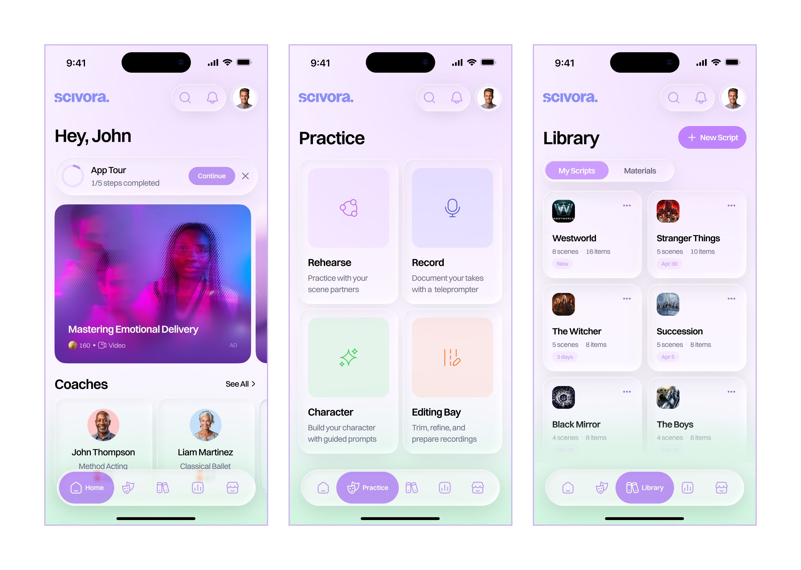
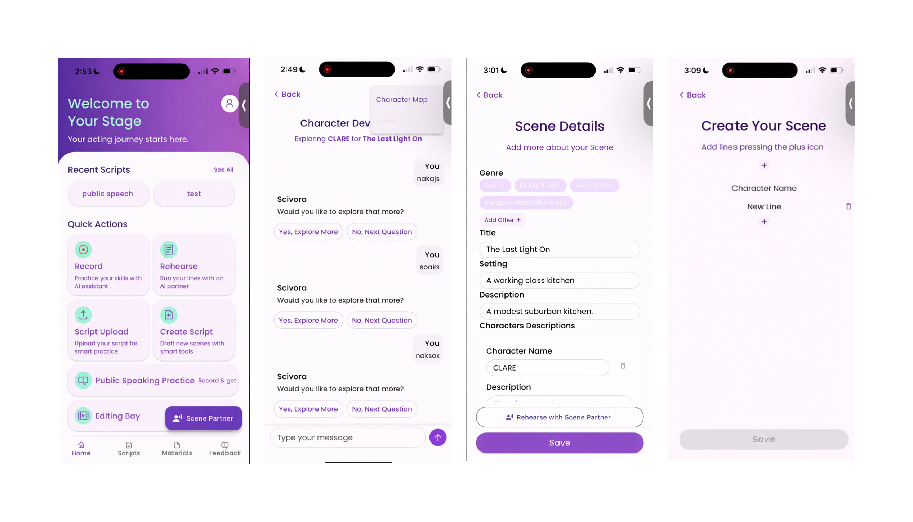
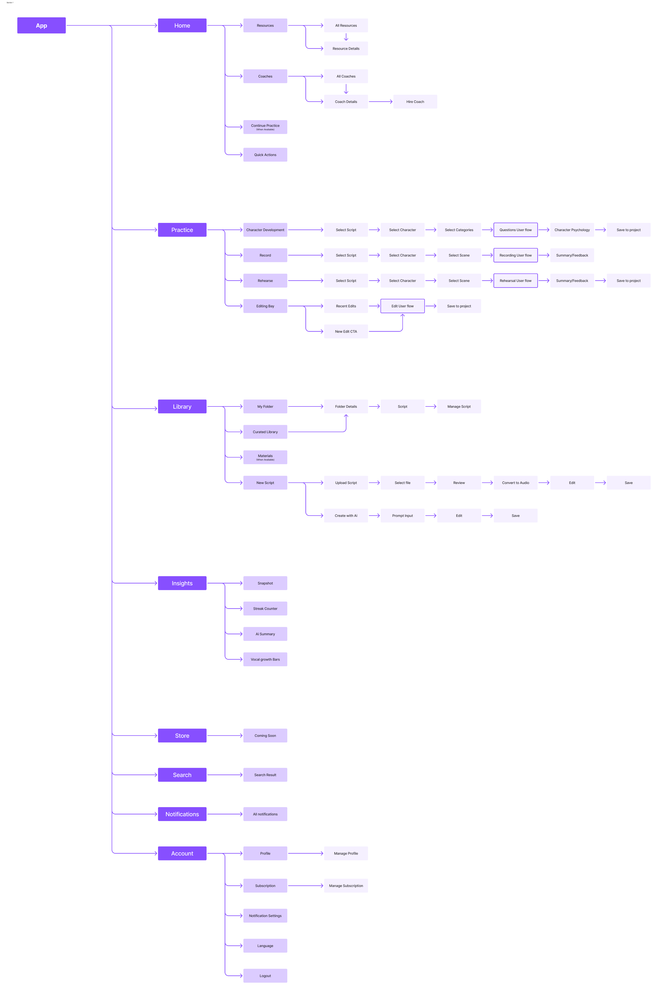
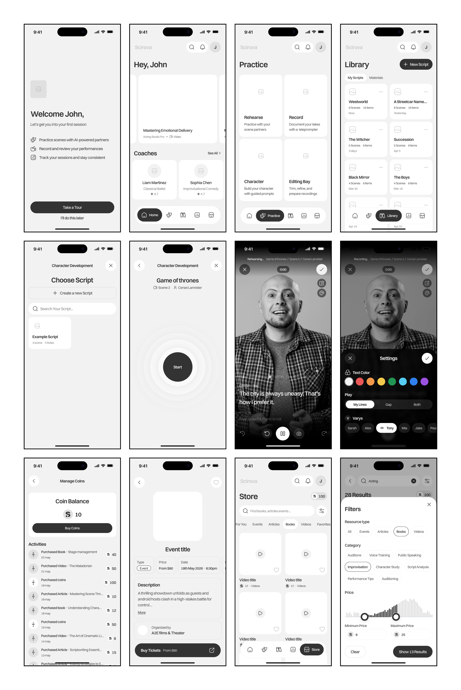
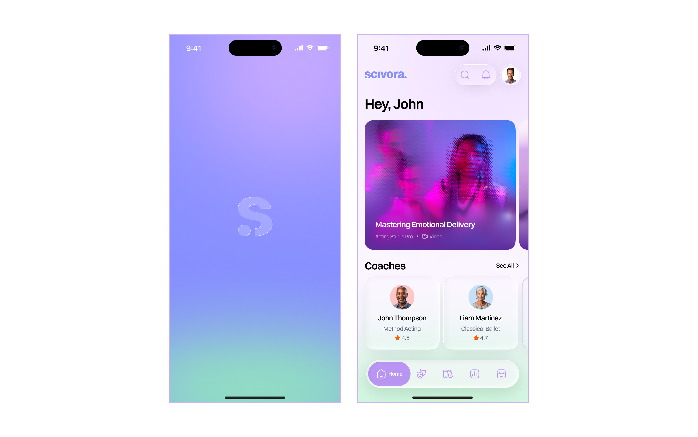
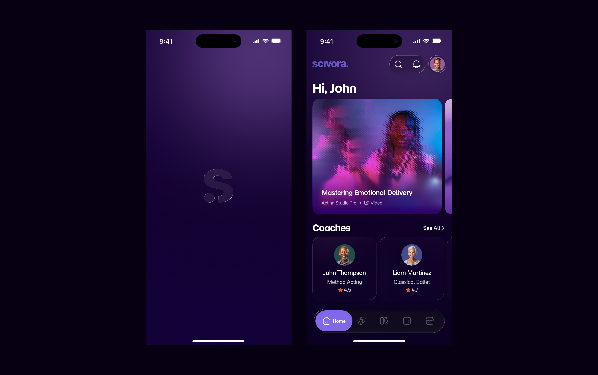
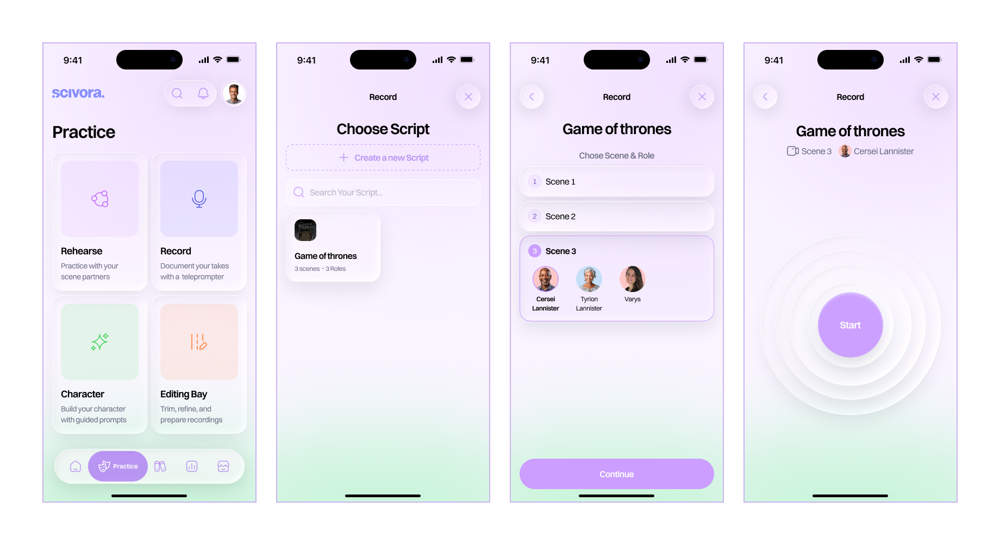
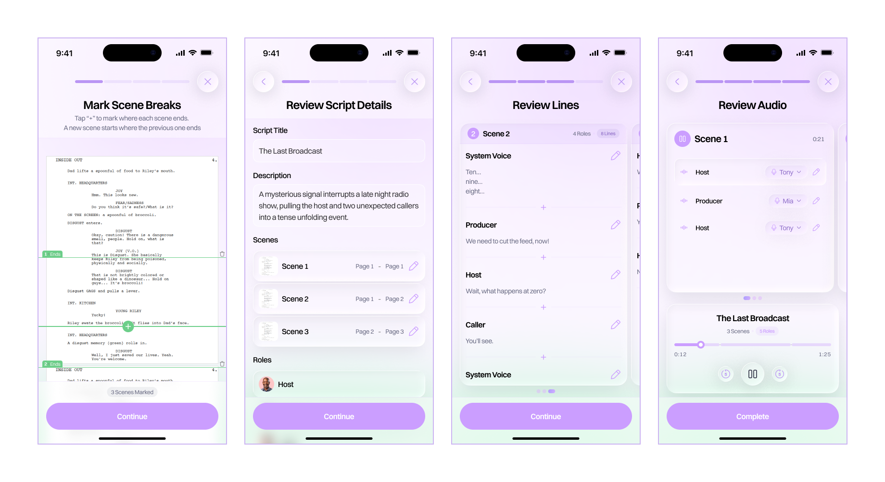
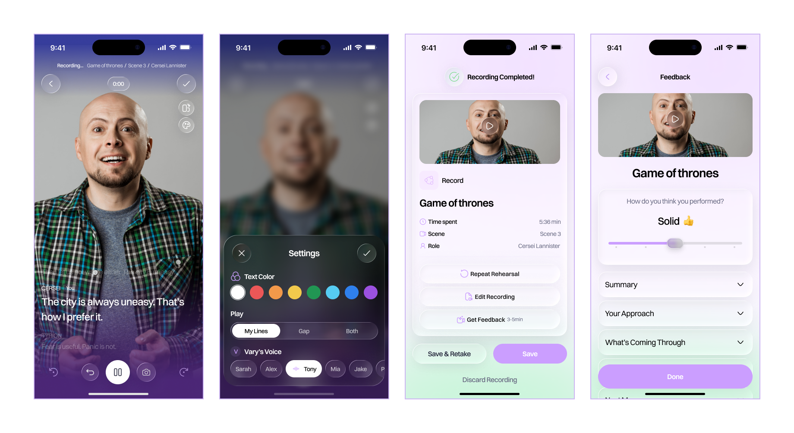
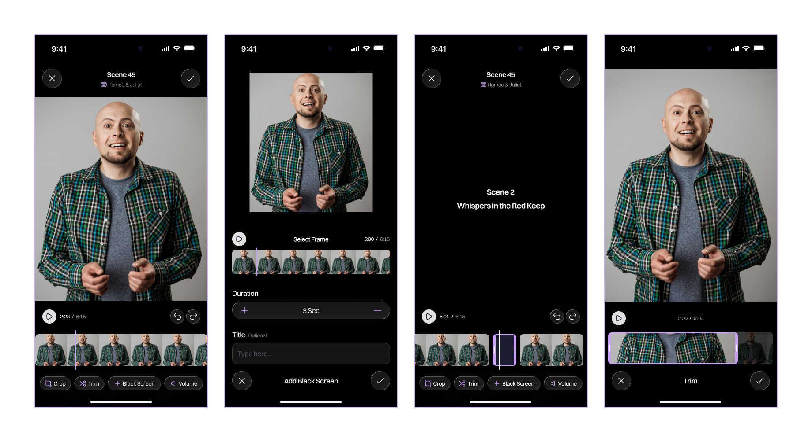

What was the project about?
An established mobile app helping actors rehearse scripts, record performances, edit audition tapes, and access learning materials. The product had already proven its value with thousands of users, but the experience had become fragmented as new features were added over time.
I led the end to end redesign of the application, restructuring the information architecture, simplifying core workflows, and creating a modern interface that supported the next phase of the product.

Primary Navigation Screens of the Redesigned Application
The Problem
The product had grown successfully over several releases, but its structure had not evolved with it. Navigation had become increasingly difficult, core workflows required unnecessary effort, and newer features felt disconnected from the rest of the experience.
The redesign needed to modernize the interface while preserving the familiarity existing users relied on.
Design Process
Product Audit
The project began with a complete audit of the existing application to understand where users experienced friction and where the product structure had become difficult to navigate.

(Before) Identifying usability issues and opportunities before redesigning the experience.
Information Architecture
Every major workflow was mapped before exploring visual design. The navigation was reorganized around the actions actors performed most often, creating clearer relationships between practice, editing, library management, insights, and the marketplace.

UX flow diagram / Information architecture.
Wireframes
Low fidelity wireframes were used to validate navigation, layout, and task completion before introducing visual design. This made it easier to refine user flows with stakeholders while keeping discussions focused on usability.

Validating navigation and workflow before visual exploration.
Visual Exploration
Two distinct visual directions were created to establish the product's next generation look and feel. After review, one direction was selected and applied across the redesigned experience.

This vibrant, playful theme uses the brand's colors.

A darker, mature theme that keeps the brand's primary color for a professional look.
Solutions
The redesign focused on making the app easier to learn and faster to use without changing the core experience users relied on. Navigation was restructured, repetitive steps were reduced, and key workflows were redesigned around how actors naturally prepare, rehearse, record, and share performances. The result was a more cohesive experience that supported both new and experienced users while creating room for future features.

The script selection flow was redesigned to cut unnecessary decisions and speed rehearsal setup. What took multiple screens is now two clear steps, keeping the context actors need to pick the right scene and role.

Creating practice material is now a guided workflow from script upload to final review. AI-generated dialogue and custom voice selection cut manual effort and offer rehearsal flexibility.

Rehearsal and Recording experience brought recording controls, teleprompter settings, playback, and performance feedback into a single focused workflow.

Editing experience included common actions like trimming clips, adjusting audio, and adding black screens.
Marketplace was refreshed to simplify finding Events, scripts, books, and learning resources. Improved browsing, filtering, and product pages helped users buy more materials easily.
Outcome
The redesign established a stronger foundation for the product's next phase while preserving familiarity for its existing community. Key outcomes included: Reorganized the product around core rehearsal workflows, simplified navigation across the entire application, designed a modern interface ready for future feature expansion, and introduced guided onboarding to support existing users through the transition.